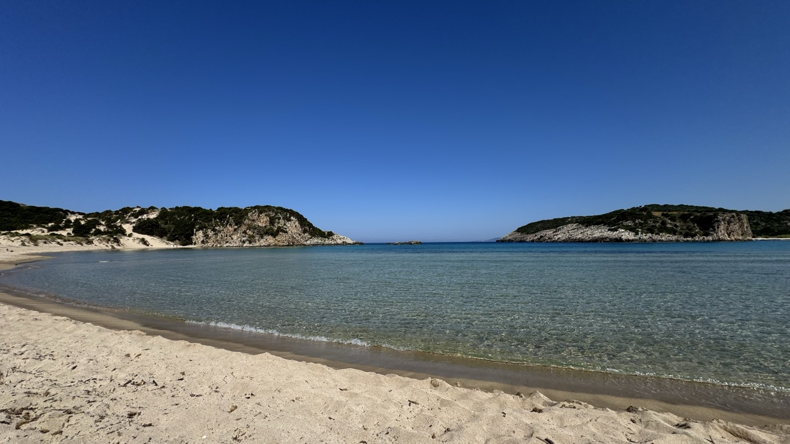
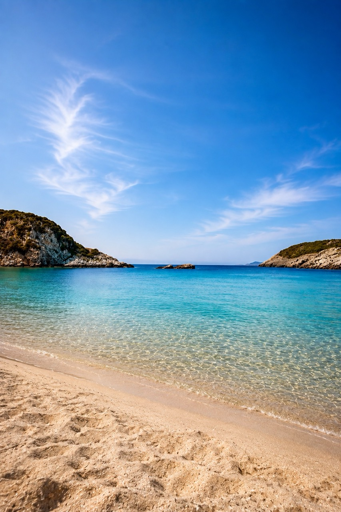
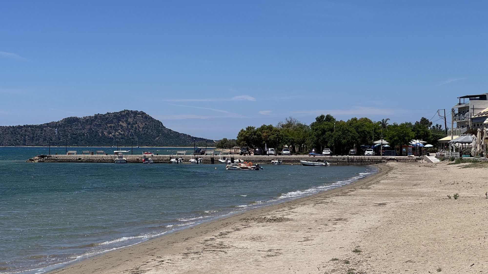
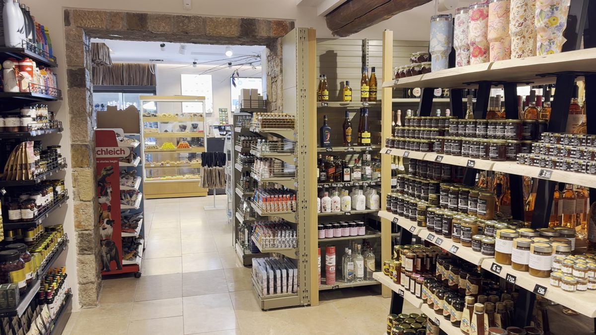

Imagine a perfect horseshoe of golden sand, turquoise water, an ancient castle above the bay and not a beach bar in sight. Welcome to Voidokilia Beach in the Peloponnese, where nature has put on a spectacular show and politely asked everyone to take their rubbish home.
There are beautiful beaches, breathtaking beaches, and then there’s Voidokilia. You arrive, look at the water and wonder whether somebody has secretly turned up the saturation on the entire Mediterranean.
They haven’t. It really is that colour.
A BEACH THAT DOESN’T LOOK REAL

Near Gialova and Pylos on the southwestern coast of the Peloponnese, Voidokilia is famous for its almost perfectly circular bay. From above, the golden sand forms a horseshoe around clear turquoise water, as though somebody designed it on a computer before sending the plans to the Greek coastline department.
Our drone footage captured the extraordinary shape beautifully. The sweeping curve of the beach, vivid water and surrounding hills make this one of the most spectacular natural sights we’ve encountered in the Peloponnese. The aerial view is every bit as impressive as the view from the sand.
Best of all, there are no rows of sunbeds, beach clubs or people charging the price of a small mortgage for an ice cream. Voidokilia is part of a protected natural landscape, and its lack of commercial development is a huge part of its appeal. There is, however, a catch: you need to bring practically everything with you.
SWIMMING AND DOING VERY LITTLE

The sandy shoreline makes swimming a pleasure when conditions are calm. It’s the sort of place where you set out for a quick dip and discover an hour has passed. You’ve floated about and achieved very little apart from having a thoroughly good time. Which, as far as we’re concerned, is an excellent use of a holiday.
Water depth and conditions vary, and there are no lifeguards or organised beach facilities. Check the sea before swimming and supervise children closely. There’s little natural shade, so don’t underestimate the summer sun.
THE ESSENTIAL VOIDOKILIA PICNIC
Voidokilia has no beach bars, tavernas, shops or convenient kiosk selling ice creams when you’ve forgotten to bring one. You can decide you’re hungry; you just won’t have anywhere on the beach to buy lunch.
Our advice? Visit a local bakery before setting off. Freshly baked spinach pies, pastries, fruit, a huge bag of Greek crisps and plenty of water make an excellent picnic.
Greek crisps seem to have an unfair advantage over their British counterparts. Perhaps it’s the sunshine, perhaps it’s the sea air, or perhaps they simply taste better beside a Greek beach. Whatever the explanation, a large bag is essential.
Pack everything in a cool bag and take enough food and drink for the day. You’ll be glad you did when that spinach pie tastes like the finest meal you’ve ever eaten.
This, ladies and gentlemen, is what we call planning.
OUR BEACH TENT: FIVE MINUTES, APPARENTLY
There’s another essential item we wouldn’t be without: shade. We have a collapsible beach tent that packs into our suitcase, making it ideal for travelling when luggage space is precious. According to the instructions, it can be assembled in five minutes.
Now, we’re not suggesting the manufacturer has been economical with the truth, but the instructions were clearly written by somebody who has never attempted to assemble a beach tent on loose sand while a Mediterranean breeze tries to send the entire thing to another postcode.
In our experience, five minutes becomes approximately eleven. There was sand. There was wind. There may have been some discussion about which bit went where. Fortunately, we have the video footage to prove it.
Eventually, we got there, and the tent made an enormous difference.
Bring a beach tent or securely anchored umbrella, hats, high-factor sunscreen and plenty of water. The aim is to enjoy the beach, not return to the car looking like a pair of overcooked lobsters. Please take everything away with you when you leave. This protected natural area deserves to stay beautiful.
THE CASTLE, MYTHOLOGY AND WILDLIFE
Look up from the beach and you’ll see the remains of Palaiokastro, also known as Old Navarino Castle, standing high above the bay. Built during the medieval period, the fortress overlooks Voidokilia, Gialova Lagoon and the wider coastline.
The area also has links to Greek mythology. Nearby Pylos is associated with King Nestor and Homer’s Odyssey, in which Telemachus visits Pylos seeking news of his missing father, Odysseus. It’s a fascinating historical backdrop to a day at the beach.
Behind the dunes lies Gialova Lagoon, a protected wetland and habitat for migratory birds. Depending on the season, you may spot herons, egrets, flamingos and other waterbirds. Keep to designated paths and avoid disturbing wildlife.
DON’T MISS GIALOVA AND MARTINS

Before heading to the beach, make time for nearby Gialova, a coastal village with cafés, restaurants and places to pick up picnic supplies.
We discovered Martins, a wonderful family-run, all-in-one shop that deserves a mention. It’s the sort of place where you walk in intending to buy one or two things and find yourself browsing all sorts of things you hadn’t realised you needed. There are everyday essentials, beach and camping supplies, souvenirs, gifts, food and stylish resort wear. It’s particularly useful if you’ve forgotten something important for your beach expedition.
Need snacks? Sorted. Forgotten beach essentials? Have a look. Fancy browsing some lovely holiday clothes? Well, that’s just unfortunate for the credit card.

Allow time to enjoy Gialova, grab a coffee or stock up before continuing to the beach. An early start is a good idea in summer, when parking can fill up and the heat builds.
PRACTICAL INFORMATION FOR VISITING VOIDOKILIA BEACH
Where is it?
In Messinia, on the western side of the Peloponnese, near Gialova and Pylos.
How long is the drive?
Allow around 1 hour 15 minutes to 1 hour 30 minutes from Kalamata, or approximately 40 minutes from Methoni, depending on your route.
When should you visit?
May and June can offer warm weather and fewer visitors. July and August are hotter and busier; September and early October can be lovely. In summer, arrive early or later in the afternoon.
Is there parking?
There’s a parking area near the beach, but spaces are limited. Use designated areas and don’t assume you’ll find a space at peak times.
Are there facilities?
Don’t expect toilets, showers, food outlets, sunbeds or umbrella hire. Bring drinking water, a picnic, a cool bag, swimming gear, towels, shade, sunscreen, hats and bags for rubbish. Add walking shoes if you plan to explore the trails.
Is it suitable for children?
The sandy shoreline can be appealing for families, but there’s no organised beach supervision or dependable shade. Supervise children closely and check swimming conditions.
Can you camp overnight?
Don’t assume camping is permitted. Check current local regulations and use authorised accommodation.
OUR VERDICT: IS VOIDOKILIA BEACH WORTH VISITING?
Absolutely - Voidokilia is one of those places that stays with you. Our drone footage captured its remarkable shape, but even the best photographs can’t recreate the feeling of being there.
The lack of facilities means planning ahead, but that’s part of what keeps the beach so special. Bring your picnic, pack your shade and give yourself time to enjoy the area. If you’re exploring the southwestern Peloponnese, combine your visit with Gialova, Pylos or Methoni and remember, if the beach-tent instructions promise five minutes, allow eleven. Possibly twelve if there’s a sea breeze.
Would we recommend visiting? Without hesitation. Just remember the spinach pies, because discovering one of Greece’s most beautiful beaches without any lunch would be a holiday disaster of epic proportions.
KEEP EXPLORING THE PELOPONNESE WITH FLIP FLOP FLICKS
Join us as we explore Greece’s beaches, historic towns and hidden corners, sharing travel videos, honest opinions and the occasional demonstration of why assembling camping equipment in a sea breeze should probably be an Olympic sport.
Flip Flop Flicks — exploring Greece one beach, one bakery and one slightly delayed beach-tent assembly at a time.